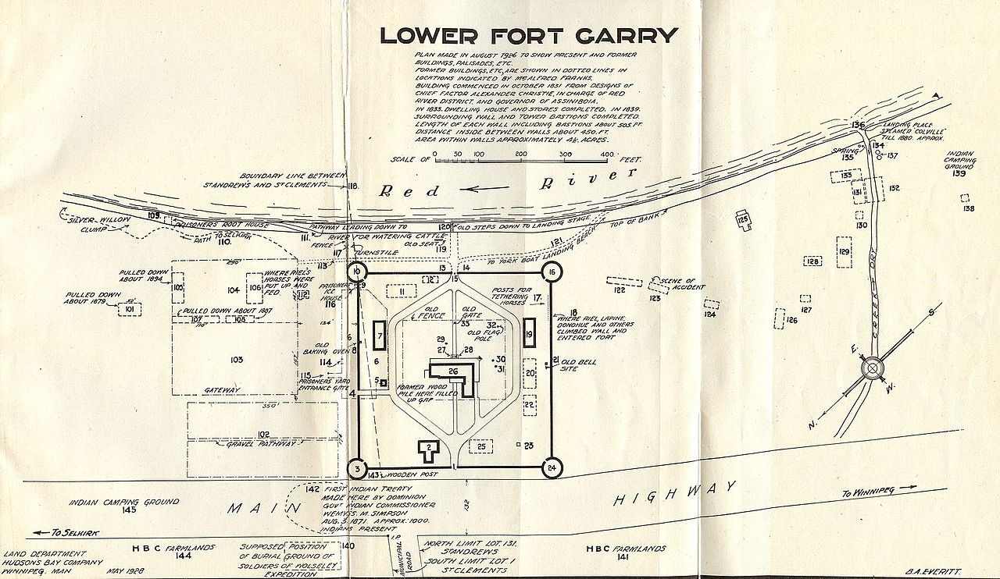
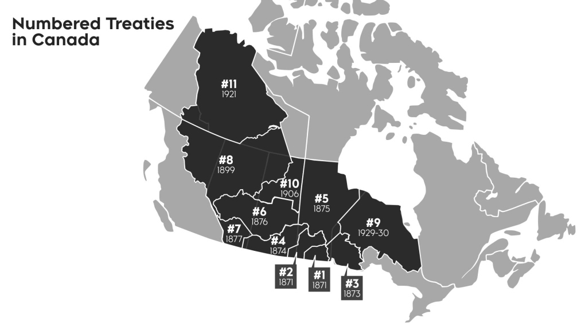

What makes this Treaty different from other Treaties in Canada
Treaty 1, signed in 1871, is distinct as the first of the Numbered Treaties between the Canadian government and Indigenous nations, specifically the Anishinaabe and Swampy Cree, covering areas in southern Manitoba, including Winnipeg. Its historical significance lies in the involvement of Indigenous leaders in negotiations, establishing a framework for future treaties. The treaty included specific provisions for land rights, education, and hunting and fishing, setting a precedent for subsequent agreements. Additionally, Treaty 1's ongoing relevance in discussions about Indigenous rights, land claims, and self-governance highlights its lasting impact on contemporary Indigenous issues in Canada.
How is the Treaty being implemented today. For example, information about urban reserves
Today, Treaty 1 is being implemented through various initiatives, including the establishment of urban reserves, which are designed to enhance the economic and cultural presence of First Nations within urban areas. Urban reserves allow Indigenous communities to develop land within cities, enabling them to create businesses, provide services, and generate revenue while retaining their treaty rights.
Signing Date
Treaty No. 1 was signed on August 3, 1871, at Lower Fort Garry.
Negotiation Context
Indigenous leaders negotiated for land and assurances for their future.
Key Terms
- 160 acres for each family of five.
- Annual payment of $15 per family.
- Provision for schools on reserves.
Challenges
Many verbal promises were not fulfilled, leading to disputes.
Where it Was Signed
Treaty One Nation is composed of the seven First Nations who are signatories to the first of the numbered Treaties, originally signed on August 3, 1871 at Lower Fort Garry after several days of discussions and ceremonies.
flickr.com
winnipeg.ctvnews.ca

treaty1.ca